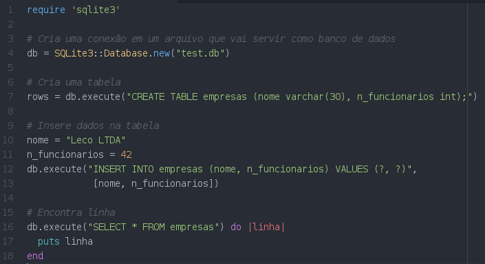

Sinatra + Banco de Dados
SQLite3 e DataMapper
by Lequinho da Galera
O que é SQLite3?
Um SGBD bem leve, que usa um arquivo como banco de dados
Comofas?
$ sudo apt-get install sqlite3 libsqlite3-dev
$ sqlite3 arquivo_do_banco.db
E no Rubyzera?
$ sudo gem install sqlite3
Escrevendo SQL no Ruby
So far, so good... so what?
DataMapper
Um ORM bem simples para facilitar nosso trabalho
Mas... WTF é um ORM?
Instalando as gems
$ sudo gem install data_mapper
$ sudo gem install dm-sqlite-adapter